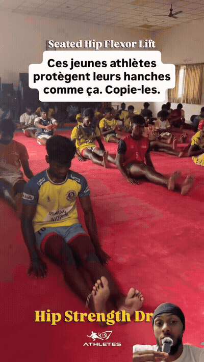
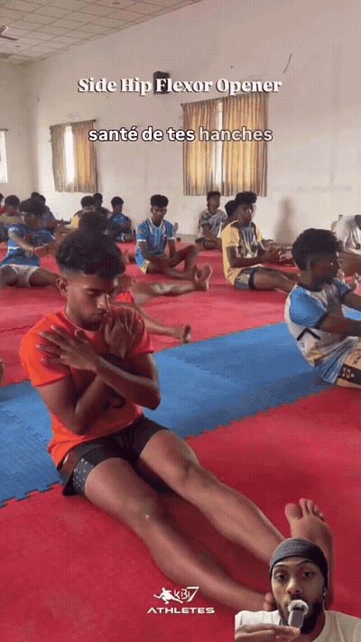
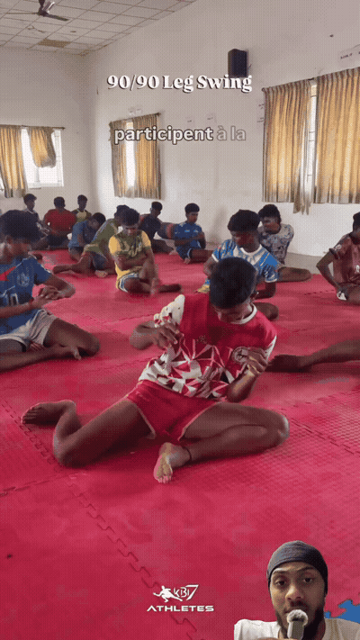
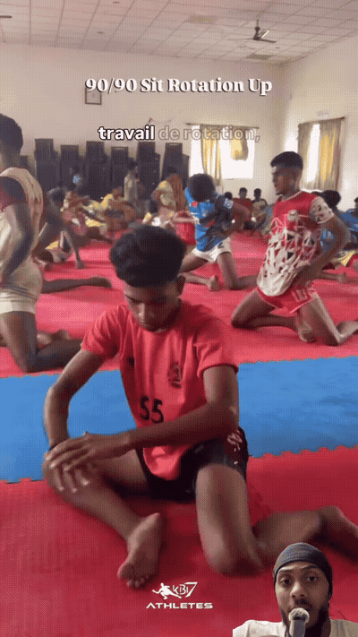
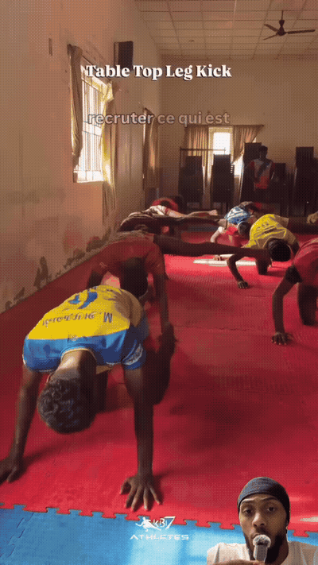
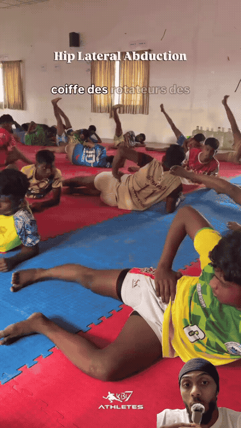

Active straight-leg lift from the seated position shown. Treat it as a controlled hip-flexor drill, not a momentum kick.

The seated side-position hip opener labelled in the reel. Keep the trunk organized while exploring the available hip range.

Controlled leg movement from the 90/90 setup. Use the smallest range that keeps the torso and pelvis steady.

A 90/90 rotational transition with an active rise, labelled ‘90/90 Sit Rotation Up’ in the reel.

From the tabletop position shown, extend one leg while resisting rotation through the pelvis and ribcage.

Side-lying leg lift labelled ‘Hip Lateral Abduction.’ Keep the pelvis stacked while the upper leg moves away from midline.